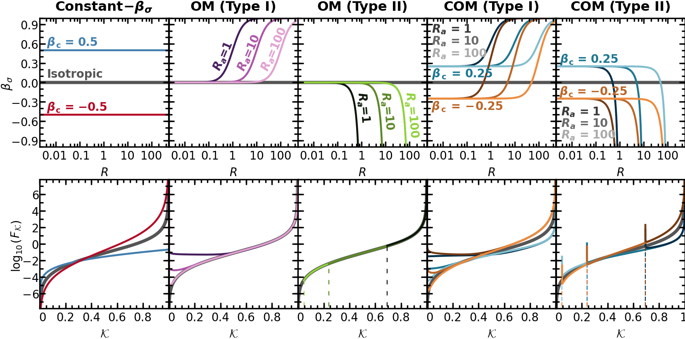
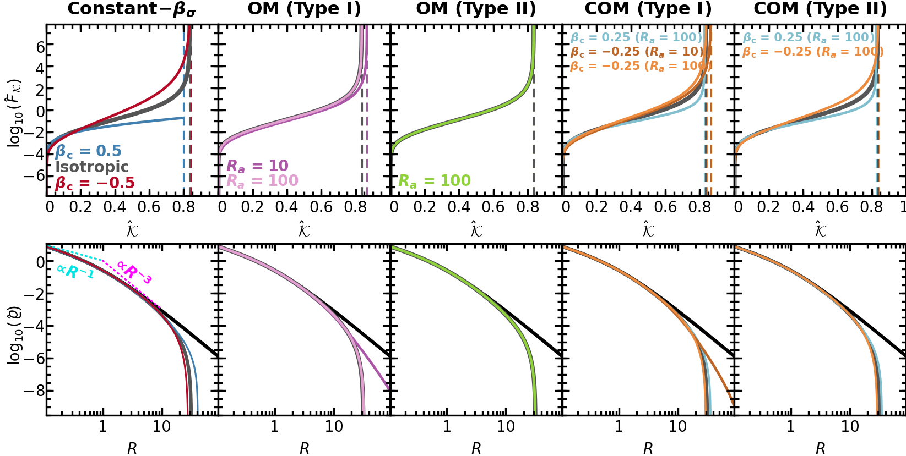
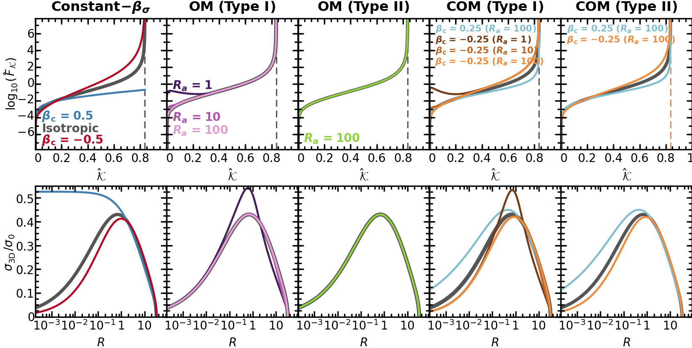

Figs. 4, 5 and 6: Distribution functions with and without truncation#
This notebook makes Figures 4, 5 and 6 of the paper.
Fig. 4 (
DF_Untruncation_DFs.pdf): top, the anisotropy \(\beta_\sigma(R)\) of each family in closed form; bottom, the untruncated distribution function \(F(\mathcal{K})\) of the NFW density with that anisotropy (pp.compute_df).Fig. 5 (
DF_Truncation_DFs_I.pdf): Method I, each member truncated at its own \(\mathcal{K}_{\rm t}\) (pp.truncateof the untruncated DF withpp.Truncation(k_t=...), which is whatpp.solvedoes); top, \(\hat F(\hat{\mathcal{K}})\) with \(\hat{\mathcal{K}} = \mathcal{K} - \mathcal{K}_{\rm t}\); bottom, the truncated density \(\hat\varrho(R)\).Fig. 6 (
DF_Truncation_DFs_II.pdf): Method II, the isotropic NFW truncated at \(\mathcal{K}_{\rm t} = 0.1651\) (the Method I model) and each member a model with its anisotropy on that model’s truncated density (pp.solve(pp.Component(truncated.profile, ...))); top, \(\hat F(\hat{\mathcal{K}})\); bottom, \(\sigma_{\rm 3D}/\sigma_0\) frompp.sigma_randpp.sigma_t, \(\sigma_0 = (\ln 11 - 10/11)^{1/2}\).
The figures are drawn in the published style: the page, the frames and the text positions of the original Mathematica exports
(data/fig04_05_06/layout_fig04.json, _fig05, _fig06), the ticks inward on all four sides at their printed size, the curve
labels at the exports’ positions, all text in DejaVu Sans (scripts/mma_port.py, scripts/dejavu_labels.py). The dashed vertical lines at
the truncation energies are those of the published figures. Every curve is computed here by the package’s public calls; nothing is read
from stored model data. A model the package refuses is printed with its reason and left out.
Per-call accuracy messages are quieted; the summary after each figure’s models lists every model’s tier.
import math
import os
os.environ["TF_CPP_MIN_LOG_LEVEL"] = "3" # before any JAX import: no C++ log lines from XLA
import logging
# matplotlib's Computer Modern fonts carry very old timestamps, which fontTools reports while the PDFs embed them
logging.getLogger("fontTools").setLevel(logging.ERROR)
import sys
import numpy as np
import pianistpy as pp
sys.path.insert(0, "scripts")
import mma_port as mp # noqa: E402
DATA = "data/fig04_05_06"
NFW = pp.DoublePowerLaw.nfw()
C = mp.C # the colors of the published figures (exact RGB of the exports)
FRAME = mp.FRAME # 224.46 pt, the frame side of the exports
PRINTED = {0.04: 4.08, 0.02: 2.45, 0.01: 1.225} # the FrameTicks sizes (fraction of the frame) -> pt as printed
def printed_scale(W):
"""The printed scale of a page W pt wide placed at 0.99 of the text width (506.1 pt); frame and tick lines 1.02 pt as printed."""
s = 0.99 * 506.1 / W
mp.LW_FRAME = 1.02 / s
return s
def tick(ax, side, vals, size, s):
"""inward ticks of a FrameTicks entry on one side, drawn at their printed length"""
mp.ticks(ax, side, vals, PRINTED[size] / s / FRAME)
def logF_frame(page, col, row, s):
"""a log10 F frame of the three figures: K (or K^) in [0, 1], F in [10^-7.8, 10^7.8]"""
ax = page.frame(col, row, "linear", (0.0, 1.0), "log", (10 ** -7.8, 10 ** 7.8))
dec = [10.0 ** x for x in mp.arange(-10, 10, 1.0)]
tick(ax, "left", dec, 0.02, s); tick(ax, "left", [10.0 ** x for x in range(-10, 9, 2)], 0.04, s)
tick(ax, "right", dec, 0.02, s); tick(ax, "right", [10.0 ** x for x in range(-10, 11, 2)], 0.04, s)
tick(ax, "bottom", mp.arange(0, 1, 0.05), 0.02, s); tick(ax, "bottom", [0.2, 0.4, 0.6, 0.8, 1.0], 0.04, s)
tick(ax, "top", mp.arange(0, 1, 0.05), 0.02, s); tick(ax, "top", mp.arange(0, 1, 0.2), 0.04, s)
return ax
def shifted(sp, dx, dy):
"""a text span moved by (dx, dy) pt (x right, y down)"""
if not (dx or dy):
return sp
out = dict(sp, origin=[sp["origin"][0] + dx, sp["origin"][1] + dy])
if "chars" in sp:
out["chars"] = [[c, [o[0] + dx, o[1] + dy]] for c, o in sp["chars"]]
return out
# every model of the three figures: tag -> (family, R_a, beta_c)
FAMILY = {"iso": ("iso", None, 0.0), "b+0.50": ("const", None, 0.5), "b-0.50": ("const", None, -0.5)}
for ra in (1, 10, 100):
FAMILY[f"OMI_Ra{ra}"] = ("OMI", ra, 0.0)
FAMILY[f"OMII_Ra{ra}"] = ("OMII", ra, 0.0)
for bc in ("+0.25", "-0.25"):
FAMILY[f"COMI_b{bc}_Ra{ra}"] = ("COMI", ra, float(bc))
FAMILY[f"COMII_b{bc}_Ra{ra}"] = ("COMII", ra, float(bc))
FIG4 = list(FAMILY) # Fig. 4: all 21, untruncated
FIG5_KT = { # Fig. 5: Method I, each member at its own K_t
"iso": 0.16497796163238299, "b+0.50": 0.19986231811501387, "b-0.50": 0.1603510056974926,
"OMI_Ra10": 0.13454, "OMI_Ra100": 0.1643, "OMII_Ra10": 0.225, "OMII_Ra100": 0.165,
"COMI_b+0.25_Ra100": 0.172, "COMI_b-0.25_Ra10": 0.135, "COMI_b-0.25_Ra100": 0.16125,
"COMII_b+0.25_Ra10": 0.262, "COMII_b+0.25_Ra100": 0.1742, "COMII_b-0.25_Ra10": 0.217, "COMII_b-0.25_Ra100": 0.162}
FIG6_KT = 0.1651 # Fig. 6: the Method I model's K_t (isotropic)
FIG6 = ["b+0.50", "b-0.50", "OMI_Ra1", "OMI_Ra10", "OMI_Ra100", "OMII_Ra100", "COMI_b+0.25_Ra100", "COMI_b-0.25_Ra1",
"COMI_b-0.25_Ra10", "COMI_b-0.25_Ra100", "COMII_b+0.25_Ra100", "COMII_b-0.25_Ra100"]
def anisotropy(tag):
kind, r_a, beta_c = FAMILY[tag]
if kind == "iso":
return pp.Anisotropy()
if kind == "const":
return pp.Anisotropy(beta_c=beta_c)
fam = "II" if kind.endswith("II") else "I"
if kind.startswith("COM"):
return pp.Anisotropy(beta_c=beta_c, r_a=float(r_a), kind=fam)
return pp.Anisotropy(r_a=float(r_a), kind=fam)
def made(name, call):
"""The result of a public call, or None with the package's refusal printed."""
try:
return call()
except pp.PianistpyError as e:
print(f"{name}: refused by the package: {type(e).__name__}: {str(e).splitlines()[0][:300]}")
return None
def df_table(result):
"""The DF table of a result: K and F (F signed where the inversion makes it negative)."""
k = np.asarray(result.table.k[0])
f = 10.0 ** np.asarray(result.table.log_df[0])
sign = np.asarray(result.table.sign[0]) if np.size(result.table.sign) else np.ones_like(k)
return k, np.where(sign < 0, -f, f)
def beta_closed(tag, R):
"""beta_sigma(R) of each family in closed form; a Type II family is -1e5 outside R_a, where it is not defined"""
kind, ra, bc = FAMILY[tag]
if kind in ("iso", "const"):
return np.full_like(R, bc)
q = (ra / R) ** 2
qq = (ra / np.minimum(R, ra * (1 - 1e-15))) ** 2 # a Type II family evaluated inside R_a only
return {"OMI": 1 / (1 + q), "COMI": (1 + bc * q) / (1 + q),
"OMII": np.where(R < ra, 1 / (1 - qq), -1e5), "COMII": np.where(R < ra, (1 - bc * qq) / (1 - qq), -1e5)}[kind]
import logging
import math
import warnings
import pianistpy as pp
# The figures of the paper are made with ver. 1.0.0 of the package; any other installed version stops the notebook here.
PIANISTPY_PIN = "1.0.0"
print(f"pianistpy {pp.__version__}")
if pp.__version__ != PIANISTPY_PIN:
raise RuntimeError(
f"These figures are made with pianistpy {PIANISTPY_PIN}; the installed version is {pp.__version__}."
)
# The package reports each result's accuracy twice per call: a line of the pianistpy log and Python's AccuracyWarning.
# set_verbosity("quiet") hides the log's INFO line of a result in the band "recorded"; the pianistpy logger set to
# ERROR also hides the log's WARNING line of a result in the band "warned"; the filter hides the AccuracyWarning.
# The summary after each figure's models prints every model's tier in place of those per-call messages.
pp.set_verbosity("quiet")
logging.getLogger("pianistpy").setLevel(logging.ERROR)
warnings.filterwarnings("ignore", category=pp.AccuracyWarning)
def tier_line(label, result):
"""One summary line for a result: its label, its report's tier, and the report's worst check with that check's error.
The worst check is the check of the highest tier level; among checks of one level, the check with the largest error.
A result whose tier is carried from the Method I model's report, and not from any of the result's own checks, says so.
"""
if result is None:
return f"{label:34s} not built: the package's exception is printed above"
report = result.validation
def rank(key):
error = report.checks[key].error
return (report.checks[key].level, error if not math.isnan(error) else -math.inf)
worst = max(report.keys, key=rank)
own_level = report.checks[worst].level
origin = ", the tier carried from the Method I model's report" if report.parents_level > own_level else ""
return (f"{label:34s} tier {report.tier:9s} worst check {worst} "
f"{report.checks[worst].error:.2e}{origin}")
pianistpy 1.0.0
The models#
The untruncated DF of each of the 21 members is computed once (pp.compute_df): Fig. 4 draws them, and the Method I models of
Fig. 5 and the Method I model of Fig. 6 are their truncations (pp.truncate; pp.solve(component, truncation) is compute_df followed by
truncate). The members of Fig. 6 are new inversions on the Method I model’s truncated density.
dfs = {tag: made(f"{tag} (untruncated)", lambda tag=tag: pp.compute_df(pp.Component(NFW, anisotropy(tag)))) for tag in FIG4}
for tag, d in dfs.items():
if d is not None:
k, f = df_table(d)
print(f"{tag:20s} {k.size:6d} rows, K in [{k[0]:.3e}, {k[-1]:.10f}], F < 0 on {int(np.sum(f < 0))} rows")
iso 9655 rows, K in [2.007e-10, 0.9999999990], F < 0 on 0 rows
b+0.50 9656 rows, K in [2.007e-10, 0.9999999990], F < 0 on 0 rows
b-0.50 9655 rows, K in [2.007e-10, 0.9999999990], F < 0 on 0 rows
OMI_Ra1 8146 rows, K in [2.004e-10, 0.9999999990], F < 0 on 0 rows
OMII_Ra1 8311 rows, K in [1.000e-10, 0.9999999990], F < 0 on 0 rows
COMI_b+0.25_Ra1 7535 rows, K in [2.005e-10, 0.9999999990], F < 0 on 0 rows
COMII_b+0.25_Ra1 21921 rows, K in [1.000e-10, 0.9999999990], F < 0 on 0 rows
COMI_b-0.25_Ra1 8398 rows, K in [2.009e-10, 0.9999999990], F < 0 on 0 rows
COMII_b-0.25_Ra1 22066 rows, K in [1.000e-10, 0.9999999990], F < 0 on 0 rows
OMI_Ra10 8369 rows, K in [2.002e-10, 0.9999999990], F < 0 on 0 rows
OMII_Ra10 8004 rows, K in [1.000e-10, 0.9999999990], F < 0 on 0 rows
COMI_b+0.25_Ra10 7529 rows, K in [2.010e-10, 0.9999999990], F < 0 on 0 rows
COMII_b+0.25_Ra10 11245 rows, K in [1.000e-10, 0.9999999990], F < 0 on 0 rows
COMI_b-0.25_Ra10 7626 rows, K in [2.003e-10, 0.9999999990], F < 0 on 0 rows
COMII_b-0.25_Ra10 10507 rows, K in [1.000e-10, 0.9999999990], F < 0 on 0 rows
OMI_Ra100 7643 rows, K in [2.012e-10, 0.9999999990], F < 0 on 0 rows
OMII_Ra100 7766 rows, K in [1.000e-10, 0.9999999990], F < 0 on 0 rows
COMI_b+0.25_Ra100 7498 rows, K in [2.003e-10, 0.9999999990], F < 0 on 0 rows
COMII_b+0.25_Ra100 8435 rows, K in [1.000e-10, 0.9999999990], F < 0 on 0 rows
COMI_b-0.25_Ra100 7639 rows, K in [2.010e-10, 0.9999999990], F < 0 on 0 rows
COMII_b-0.25_Ra100 8596 rows, K in [1.000e-10, 0.9999999990], F < 0 on 0 rows
print("Figure 4: the 21 untruncated models")
for tag, d in dfs.items():
print(tier_line(tag, d))
Figure 4: the 21 untruncated models
iso tier silent worst check high_k_slope_mismatch 6.45e-07
b+0.50 tier silent worst check top_form 3.00e-08
b-0.50 tier silent worst check high_k_slope_mismatch 1.72e-09
OMI_Ra1 tier recorded worst check high_k_slope_mismatch 3.37e-06
OMII_Ra1 tier silent worst check top_form 2.66e-09
COMI_b+0.25_Ra1 tier silent worst check high_k_slope_mismatch 6.20e-07
COMII_b+0.25_Ra1 tier silent worst check top_form 1.82e-08
COMI_b-0.25_Ra1 tier silent worst check high_k_slope_mismatch 1.80e-07
COMII_b-0.25_Ra1 tier silent worst check top_form 1.10e-08
OMI_Ra10 tier recorded worst check high_k_slope_mismatch 3.37e-06
OMII_Ra10 tier silent worst check top_form 2.66e-09
COMI_b+0.25_Ra10 tier silent worst check high_k_slope_mismatch 6.49e-07
COMII_b+0.25_Ra10 tier silent worst check top_form 2.10e-08
COMI_b-0.25_Ra10 tier silent worst check high_k_slope_mismatch 1.59e-07
COMII_b-0.25_Ra10 tier silent worst check top_form 7.23e-09
OMI_Ra100 tier recorded worst check high_k_slope_mismatch 3.38e-06
OMII_Ra100 tier silent worst check top_form 2.66e-09
COMI_b+0.25_Ra100 tier silent worst check high_k_slope_mismatch 6.58e-07
COMII_b+0.25_Ra100 tier silent worst check top_form 1.36e-08
COMI_b-0.25_Ra100 tier silent worst check high_k_slope_mismatch 1.48e-07
COMII_b-0.25_Ra100 tier silent worst check top_form 5.06e-08
m1 = {tag: (made(f"{tag} at K_t {kt}", lambda tag=tag, kt=kt: pp.truncate(dfs[tag], pp.Truncation(k_t=kt)))
if dfs[tag] is not None else None) for tag, kt in FIG5_KT.items()}
for tag, m in m1.items():
if m is not None:
print(f"{tag:20s} K_t {FIG5_KT[tag]:<20} R_t {float(m.profile.r_t):.6g}, K^ end {float(np.asarray(m.table.k[0])[-1]):.6f}")
OMII_Ra10 at K_t 0.225: refused by the package: UnphysicalModelError: The truncation at K_t = 0.225 is refused: DOMAIN; Z GATE (DOMAIN: K_t must lie above P(R_a) = 0.23978952727983707, the potential at the anisotropy's domain edge R_a = 10, so that R_t < R_a; Merritt 1985).
COMII_b+0.25_Ra10 at K_t 0.262: refused by the package: UnphysicalModelError: The truncation at K_t = 0.262 is refused: TYPE II EDGE: the model's potential at R_a = 10 is Phi = 4.394247e-02, above the floor, so its truncation radius lies beyond R_a, where the Type II density rho_aux / (1 - r^2/R_a^2) has a pole (the solve stopped at R_a - r = 9.930e-13); a larger K_t moves th
COMII_b-0.25_Ra10 at K_t 0.217: refused by the package: UnphysicalModelError: The truncation at K_t = 0.217 is refused: DOMAIN; Z GATE (DOMAIN: K_t must lie above P(R_a) = 0.23978952727983707, the potential at the anisotropy's domain edge R_a = 10, so that R_t < R_a; Merritt 1985).
iso K_t 0.16497796163238299 R_t 31.8916, K^ end 0.835022
b+0.50 K_t 0.19986231811501387 R_t 41.0998, K^ end 0.800138
b-0.50 K_t 0.1603510056974926 R_t 27.977, K^ end 0.839649
OMI_Ra10 K_t 0.13454 R_t 251.229, K^ end 0.865460
OMI_Ra100 K_t 0.1643 R_t 32.3017, K^ end 0.835700
OMII_Ra100 K_t 0.165 R_t 31.6547, K^ end 0.835000
COMI_b+0.25_Ra100 K_t 0.172 R_t 36.1036, K^ end 0.828000
COMI_b-0.25_Ra10 K_t 0.135 R_t 139.988, K^ end 0.865000
COMI_b-0.25_Ra100 K_t 0.16125 R_t 29.8994, K^ end 0.838750
COMII_b+0.25_Ra100 K_t 0.1742 R_t 34.9995, K^ end 0.825800
COMII_b-0.25_Ra100 K_t 0.162 R_t 29.3003, K^ end 0.838000
print("Figure 5: the 14 Method I models")
for tag, m in m1.items():
print(tier_line(f"{tag} at K_t {FIG5_KT[tag]}", m))
Figure 5: the 14 Method I models
iso at K_t 0.16497796163238299 tier silent worst check round_trip 5.00e-08
b+0.50 at K_t 0.19986231811501387 tier silent worst check round_trip 1.31e-07
b-0.50 at K_t 0.1603510056974926 tier silent worst check poisson_residual 6.59e-08
OMI_Ra10 at K_t 0.13454 tier recorded worst check round_trip 5.20e-08, the tier carried from the Method I model's report
OMI_Ra100 at K_t 0.1643 tier recorded worst check poisson_residual 9.72e-08, the tier carried from the Method I model's report
OMII_Ra10 at K_t 0.225 not built: the package's exception is printed above
OMII_Ra100 at K_t 0.165 tier silent worst check round_trip 1.75e-07
COMI_b+0.25_Ra100 at K_t 0.172 tier silent worst check round_trip 7.96e-08
COMI_b-0.25_Ra10 at K_t 0.135 tier silent worst check round_trip 3.00e-08
COMI_b-0.25_Ra100 at K_t 0.16125 tier silent worst check poisson_residual 5.53e-08
COMII_b+0.25_Ra10 at K_t 0.262 not built: the package's exception is printed above
COMII_b+0.25_Ra100 at K_t 0.1742 tier silent worst check round_trip 8.62e-08
COMII_b-0.25_Ra10 at K_t 0.217 not built: the package's exception is printed above
COMII_b-0.25_Ra100 at K_t 0.162 tier silent worst check round_trip 2.44e-07
SIGMA_0 = math.sqrt(math.log(11.0) - 10.0 / 11.0)
truncated = pp.truncate(dfs["iso"], pp.Truncation(k_t=FIG6_KT))
m2 = {"iso": truncated}
m2.update({tag: made(tag, lambda tag=tag: pp.solve(pp.Component(truncated.profile, anisotropy(tag)))) for tag in FIG6})
def sigma3d(model):
"""sigma_3D / sigma_0 on R in [1e-4, R_t), and the point (1.0001 R_t, 0) appended as the published figure does"""
r_t = float(model.profile.r_t)
R = np.geomspace(1e-4, r_t, 1201)[:-1]
s = np.sqrt(np.asarray(pp.sigma_r(model, R)) ** 2 + np.asarray(pp.sigma_t(model, R)) ** 2) / SIGMA_0
return np.r_[R, 1.0001 * r_t], np.r_[s, 0.0]
S3 = {tag: sigma3d(m) for tag, m in m2.items() if m is not None}
print(f"Method I model: K_t {FIG6_KT}, R_t {float(truncated.profile.r_t):.6g}")
for tag, (R, s) in S3.items():
print(f"{tag:20s} sigma_3D/sigma_0 at R = 1: {np.interp(0.0, np.log(R[:-1]), s[:-1]):.5f}, max {s.max():.5f}")
Method I model: K_t 0.1651, R_t 31.8604
iso sigma_3D/sigma_0 at R = 1: 0.42575, max 0.42999
b+0.50 sigma_3D/sigma_0 at R = 1: 0.44361, max 0.52579
b-0.50 sigma_3D/sigma_0 at R = 1: 0.41230, max 0.41231
OMI_Ra1 sigma_3D/sigma_0 at R = 1: 0.51247, max 0.54102
OMI_Ra10 sigma_3D/sigma_0 at R = 1: 0.42925, max 0.43251
OMI_Ra100 sigma_3D/sigma_0 at R = 1: 0.42579, max 0.43002
OMII_Ra100 sigma_3D/sigma_0 at R = 1: 0.42572, max 0.42997
COMI_b+0.25_Ra100 sigma_3D/sigma_0 at R = 1: 0.43434, max 0.44969
COMI_b-0.25_Ra1 sigma_3D/sigma_0 at R = 1: 0.51663, max 0.53229
COMI_b-0.25_Ra10 sigma_3D/sigma_0 at R = 1: 0.42142, max 0.42183
COMI_b-0.25_Ra100 sigma_3D/sigma_0 at R = 1: 0.41847, max 0.41928
COMII_b+0.25_Ra100 sigma_3D/sigma_0 at R = 1: 0.43425, max 0.44965
COMII_b-0.25_Ra100 sigma_3D/sigma_0 at R = 1: 0.41841, max 0.41923
print("Figure 6: the Method I model and the 12 Method II models")
for tag, m in m2.items():
print(tier_line(tag + (", Method I model" if tag == "iso" else ""), m))
Figure 6: the Method I model and the 12 Method II models
iso, Method I model tier silent worst check round_trip 4.96e-08
b+0.50 tier silent worst check round_trip 2.30e-07
b-0.50 tier silent worst check poisson_residual 4.65e-08
OMI_Ra1 tier silent worst check round_trip 4.96e-08
OMI_Ra10 tier silent worst check round_trip 4.98e-08
OMI_Ra100 tier silent worst check round_trip 4.97e-08
OMII_Ra100 tier silent worst check round_trip 4.97e-08
COMI_b+0.25_Ra100 tier silent worst check round_trip 1.12e-07
COMI_b-0.25_Ra1 tier silent worst check round_trip 8.40e-08
COMI_b-0.25_Ra10 tier silent worst check round_trip 8.40e-08
COMI_b-0.25_Ra100 tier silent worst check round_trip 7.95e-08
COMII_b+0.25_Ra100 tier silent worst check round_trip 1.12e-07
COMII_b-0.25_Ra100 tier silent worst check round_trip 7.95e-08
The figures#
Each figure is drawn on its export’s page, at the size it is printed in the paper.
W, H = 1194.0, 591.0
s = printed_scale(W)
page = mp.Page(W, H, [69.45 + 224.91 * i for i in range(5)], [32.0, 313.0])
R = np.geomspace(0.22e-2, 5.2e2, 20001)
R2 = lambda ra: np.unique(np.r_[R, ra * (1.0 - np.geomspace(1e-9, 1e-1, 4000))]) # noqa: E731 dense into R_a: the Type II plunge
PANELS4 = [ # (members, colors) of the five columns
(["b+0.50", "b-0.50"], ["b05", "bm05"]),
(["OMI_Ra1", "OMI_Ra10", "OMI_Ra100"], ["OM1", "OM10", "OM100"]),
(["OMII_Ra1", "OMII_Ra10", "OMII_Ra100"], ["OMII1", "OMII10", "OMII100"]),
([f"COMI_b{b}_Ra{ra}" for b in ("+0.25", "-0.25") for ra in (1, 10, 100)],
["COMRa1U", "COMRa10U", "COMRa100U", "COMRa1", "COMRa10", "COMRa100"]),
([f"COMII_b{b}_Ra{ra}" for b in ("+0.25", "-0.25") for ra in (1, 10, 100)],
["COMRa1U", "COMRa10U", "COMRa100U", "COMRa1", "COMRa10", "COMRa100"])]
def beta_frame(col):
ax = page.frame(col, 0, "log", (0.22e-2, 5.2e2), "linear", (-1.0, 1.0))
tick(ax, "left", mp.arange(-2, 2, 0.1), 0.02, s); tick(ax, "left", mp.arange(-1.2, 0.9, 0.3), 0.04, s)
tick(ax, "right", mp.arange(-2.1, 2, 0.1), 0.02, s); tick(ax, "right", mp.arange(-2.1, 2, 0.3), 0.04, s)
mn = [x * 10.0 ** k for k in range(-3, 3) for x in (2, 4, 6, 8)]
tick(ax, "bottom", mn, 0.02, s); tick(ax, "bottom", [10.0 ** k for k in range(-3, 4)], 0.04, s)
tick(ax, "top", mn, 0.02, s); tick(ax, "top", [10.0 ** k for k in range(-4, 6)], 0.04, s)
return ax
def type_I_end(tag, k, f):
"""the published list rules at the left end: OM Type I continued to the axis by the point {1e-10, 1e10}; COM Type I with
beta_c > 0 closed to zero (LeftZeroPoint), with beta_c < 0 opened to the top (LeftInfPoint)"""
kind, ra, bc = FAMILY[tag]
if kind == "OMI":
return np.r_[1e-10, k], np.r_[1e10, f]
if kind == "COMI":
p = f > 0
return np.r_[0.99999 * k[p][0], k[p]], np.r_[1e-12 if bc > 0 else 1e12, f[p]]
return k, f
def support(tag, k, f):
"""a Type II DF over its support only, K > P(R_a) = ln(1 + R_a) / R_a (the potential at the domain edge R_a)"""
ra = FAMILY[tag][1]
p_edge = math.log1p(ra) / ra
inside = k > p_edge
print(f"Fig. 4 {tag}: {inside.sum()} of {k.size} rows over the support K > P(R_a) = {p_edge:.10f}; "
f"there F <= 0 on {int(np.sum(f[inside] <= 0))} rows, min F {f[inside].min():.3e}")
return k[inside], f[inside]
# top row: beta_sigma(R)
for col, (tags, cols) in enumerate(PANELS4):
ax = beta_frame(col)
mp.curve(ax, R, 0 * R, C["iso"], 0.025)
for tag, c in zip(tags, cols):
r = R2(FAMILY[tag][1]) if FAMILY[tag][0].endswith("II") else R
mp.curve(ax, r, beta_closed(tag, r), C[c], 0.015)
# bottom row: F(K); the Type II curves drawn R_a 100 first, R_a 1 last, each with the dashed vertical at its support edge
k_iso, f_iso = df_table(dfs["iso"])
for col, (tags, cols) in enumerate(PANELS4):
ax = logF_frame(page, col, 1, s)
mp.curve(ax, k_iso, f_iso, C["iso"], 0.025)
pairs = list(zip(tags, cols))
if col in (2, 4):
pairs = [p for b in (pairs[:3], pairs[3:]) for p in b[::-1]]
for tag, c in pairs:
if dfs[tag] is None:
continue
k, f = df_table(dfs[tag])
if FAMILY[tag][0].endswith("II"):
k, f = support(tag, k, f)
mp.curve(ax, k, f, C[c], 0.015)
# half the width, AbsoluteDashing {6.5, 15}; the COM II +0.25 dashes offset by half a period, so that the two
# colors sharing one P(R_a) alternate on one line
off = 0.5 * (5.85 + 13.5) if FAMILY[tag][2] > 0 else 0.0
ax.plot([k[0], k[0]], [1e-12, f[0]], color=C[c], lw=0.0075 * FRAME, ls=(off, (5.85, 13.5)),
dash_capstyle="projecting", clip_on=True)
else:
mp.curve(ax, *type_I_end(tag, k, f), C[c], 0.015)
def adjust4(sp):
"""the published placement edits on top of the export, in pt: the two beta_c labels of the top COM Type I panel 1.6 pt
right; the R_a block of the top COM Type II panel 1.6 pt up"""
x0, y0 = sp["origin"]
if 744 < x0 < 969 and y0 < 257 and sp["color"] in ("#1d7792", "#bc6527"):
return shifted(sp, 1.6, 0.0)
if x0 > 969 and 180 < y0 < 257 and sp["color"] in ("#393939", "#6a6a6a", "#aaaaaa"):
return shifted(sp, 0.0, -1.6)
return sp
mp.draw_text(page, os.path.join(DATA, "layout_fig04.json"), adjust=adjust4)
page.save("DF_Untruncation_DFs.pdf")
import io
from IPython.display import Image, display
_png = io.BytesIO() # the page inline as well: mma_port draws on the Agg backend, which displays nothing by itself
page.fig.savefig(_png, format="png")
display(Image(_png.getvalue()))
print(f"Saved -> DF_Untruncation_DFs.pdf ({W:g} x {H:g} pt)")
Fig. 4 OMII_Ra100: 4729 of 7766 rows over the support K > P(R_a) = 0.0461512052; there F <= 0 on 0 rows, min F 3.664e-05
Fig. 4 OMII_Ra10: 4700 of 8004 rows over the support K > P(R_a) = 0.2397895273; there F <= 0 on 0 rows, min F 3.583e-03
Fig. 4 OMII_Ra1: 3927 of 8311 rows over the support K > P(R_a) = 0.6931471806; there F <= 0 on 0 rows, min F 5.942e-01
Fig. 4 COMII_b+0.25_Ra100: 5038 of 8435 rows over the support K > P(R_a) = 0.0461512052; there F <= 0 on 0 rows, min F 1.339e-04
Fig. 4 COMII_b+0.25_Ra10: 6448 of 11245 rows over the support K > P(R_a) = 0.2397895273; there F <= 0 on 0 rows, min F 5.980e-03
Fig. 4 COMII_b+0.25_Ra1: 10349 of 21921 rows over the support K > P(R_a) = 0.6931471806; there F <= 0 on 0 rows, min F 3.237e-01
Fig. 4 COMII_b-0.25_Ra100: 5216 of 8596 rows over the support K > P(R_a) = 0.0461512052; there F <= 0 on 0 rows, min F 1.471e-05
Fig. 4 COMII_b-0.25_Ra10: 5864 of 10507 rows over the support K > P(R_a) = 0.2397895273; there F <= 0 on 0 rows, min F 3.318e-03
Fig. 4 COMII_b-0.25_Ra1: 10349 of 22066 rows over the support K > P(R_a) = 0.6931471806; there F <= 0 on 0 rows, min F 1.791e+00

Saved -> DF_Untruncation_DFs.pdf (1194 x 591 pt)
W, H = 1185.0, 597.0
s = printed_scale(W)
page = mp.Page(W, H, [60.45 + 224.91 * i for i in range(5)], [32.0, 319.0])
def fhat(tag): # the point {0, 1e-12} prepended, as the published figure
k, f = df_table(m1[tag])
return np.r_[0.0, k], np.r_[1e-12, f]
def rho(tag): # the point {1.0001 R_t, 1e-20} appended, as the published figure
r, d = np.asarray(m1[tag].profile.r), np.asarray(m1[tag].profile.rho_trunc[0])
return np.r_[r, 1.0001 * r[-1]], np.r_[d, 1e-20]
def rho_frame(col):
ax = page.frame(col, 1, "log", (0.11, 0.9e2), "log", (10 ** -9.5, 10 ** 1.05))
dec = [10.0 ** x for x in mp.arange(-20, 10, 0.5)]
tick(ax, "left", dec, 0.02, s); tick(ax, "left", [10.0 ** x for x in range(-12, 9, 2)], 0.04, s)
tick(ax, "right", dec, 0.02, s); tick(ax, "right", [10.0 ** x for x in range(-20, 11, 2)], 0.04, s)
mn = [x * 10.0 ** k for k in range(-3, 3) for x in range(2, 10)]
tick(ax, "bottom", mn, 0.02, s); tick(ax, "bottom", [10.0 ** k for k in range(-3, 3)], 0.04, s)
tick(ax, "top", mn, 0.02, s); tick(ax, "top", [10.0 ** k for k in range(-4, 6)], 0.04, s)
return ax
RN = 10.0 ** np.arange(-5.0, 3.5 + 1e-9, 0.0025)
def panel5(col, top_list, grid_list, bot_list, iso_bot):
"""top: gridlines at each curve's K^ end, then F^(K^); bottom: the untruncated NFW, the isotropic and the members' rho^(R)"""
ax = logF_frame(page, col, 0, s)
for tag, c in grid_list:
if m1[tag] is not None:
mp.gridline(ax, float(np.asarray(m1[tag].table.k[0])[-1]), C[c])
for tag, c, th in top_list:
if m1[tag] is not None:
mp.curve(ax, *fhat(tag), C[c], th)
ax = rho_frame(col)
mp.curve(ax, RN, 1.0 / (RN * (1.0 + RN) ** 2), C["black"], 0.02)
mp.curve(ax, *rho("iso"), C["iso"], iso_bot)
for tag, c, th in bot_list:
if m1[tag] is not None:
mp.curve(ax, *rho(tag), C[c], th)
return ax
ax = panel5(0, [("iso", "iso", 0.025), ("b+0.50", "b05", 0.015), ("b-0.50", "bm05", 0.015)],
[("b+0.50", "b05"), ("b-0.50", "bm05"), ("iso", "iso")],
[("b+0.50", "b05", 0.01), ("b-0.50", "bm05", 0.01)], 0.02)
r1, r3 = np.geomspace(0.1, 1.0, 200), np.geomspace(1.0, 10.0, 200)
mp.curve(ax, r1, 1.0 / r1, C["cyanguide"], 0.01, dash=(1.35, 4.95)) # the R^-1 and R^-3 guides
mp.curve(ax, r3, 1.0 / r3 ** 3, C["magenta"], 0.01, dash=(1.35, 4.95))
panel5(1, [("iso", "iso", 0.025), ("OMI_Ra10", "OM10", 0.015), ("OMI_Ra100", "OM100", 0.015)],
[("OMI_Ra10", "OM10"), ("OMI_Ra100", "OM100"), ("iso", "iso")],
[("OMI_Ra10", "OM10", 0.015), ("OMI_Ra100", "OM100", 0.015)], 0.025)
panel5(2, [("iso", "iso", 0.025), ("OMII_Ra10", "OMII10", 0.015), ("OMII_Ra100", "OMII100", 0.015)],
[("OMII_Ra10", "OMII10"), ("OMII_Ra100", "OMII100"), ("iso", "iso")],
[("OMII_Ra10", "OMII10", 0.015), ("OMII_Ra100", "OMII100", 0.015)], 0.025)
panel5(3, [("iso", "iso", 0.025), ("COMI_b+0.25_Ra100", "COMRa100U", 0.015), ("COMI_b-0.25_Ra10", "COMRa10", 0.015),
("COMI_b-0.25_Ra100", "COMRa100", 0.015)],
[("COMI_b+0.25_Ra100", "COMRa100U"), ("COMI_b-0.25_Ra10", "COMRa10"), ("COMI_b-0.25_Ra100", "COMRa100"), ("iso", "iso")],
[("COMI_b+0.25_Ra100", "COMRa100U", 0.012), ("COMI_b-0.25_Ra10", "COMRa10", 0.015), ("COMI_b-0.25_Ra100", "COMRa100", 0.012)],
0.02)
panel5(4, [("iso", "iso", 0.025), ("COMII_b+0.25_Ra10", "COMRa10U", 0.015), ("COMII_b+0.25_Ra100", "COMRa100U", 0.015),
("COMII_b-0.25_Ra10", "COMRa10", 0.015), ("COMII_b-0.25_Ra100", "COMRa100", 0.015)],
[("COMII_b+0.25_Ra10", "COMRa10U"), ("COMII_b+0.25_Ra100", "COMRa100U"), ("COMII_b-0.25_Ra10", "COMRa10"),
("COMII_b-0.25_Ra100", "COMRa100"), ("iso", "iso")],
[("COMII_b+0.25_Ra10", "COMRa10U", 0.0125), ("COMII_b+0.25_Ra100", "COMRa100U", 0.0125),
("COMII_b-0.25_Ra10", "COMRa10", 0.0125), ("COMII_b-0.25_Ra100", "COMRa100", 0.0125)], 0.02)
# the published labels were laid out for the three members refused at these K_t (OM II R_a 10, COM II +0.25 and -0.25 R_a 10):
# their labels removed and the others of those panels restacked into the freed rows
PUBLISHED_REFUSED = {"OMII_Ra10", "COMII_b+0.25_Ra10", "COMII_b-0.25_Ra10"}
refused5 = {tag for tag, m in m1.items() if m is None}
if refused5 != PUBLISHED_REFUSED:
print(f"note: refused here {sorted(refused5)}, the published labels assume {sorted(PUBLISHED_REFUSED)}")
def adjust5(sp):
x, y = sp["origin"]
top_row = y < 257
if top_row and 510 < x < 735 and sp["color"] == "#5c8827":
return None
if top_row and x > 960 and sp["color"] in ("#1d7792", "#bc6527"):
return None
if top_row and x > 960:
return shifted(sp, 0.0, {"#81bece": -18.7, "#ed8c3f": -37.2}.get(sp["color"], 0.0))
return sp
mp.draw_text(page, os.path.join(DATA, "layout_fig05.json"), adjust=adjust5)
page.save("DF_Truncation_DFs_I.pdf")
_png = io.BytesIO() # the page inline as well: mma_port draws on the Agg backend, which displays nothing by itself
page.fig.savefig(_png, format="png")
display(Image(_png.getvalue()))
print(f"Saved -> DF_Truncation_DFs_I.pdf ({W:g} x {H:g} pt)")

Saved -> DF_Truncation_DFs_I.pdf (1185 x 597 pt)
W, H = 1185.0, 597.0
s = printed_scale(W)
page = mp.Page(W, H, [60.45 + 224.91 * i for i in range(5)], [32.0, 319.0])
def sigma_frame(col):
ax = page.frame(col, 1, "log", (0.0002, 0.87e2), "linear", (0.0, 0.55))
tick(ax, "left", mp.arange(-10, 30, 0.025), 0.02, s); tick(ax, "left", mp.arange(0, 0.5, 0.1), 0.04, s)
tick(ax, "right", mp.arange(-10, 30, 0.025), 0.02, s); tick(ax, "right", mp.arange(-10, 30, 0.1), 0.04, s)
mn = [x * 10.0 ** k for k in range(-4, 3) for x in (2, 4, 6, 8)]
tick(ax, "bottom", mn, 0.02, s); tick(ax, "bottom", [10.0 ** k for k in range(-3, 4)], 0.04, s)
tick(ax, "top", mn, 0.02, s); tick(ax, "top", [10.0 ** k for k in range(-4, 6)], 0.04, s)
return ax
K_END = float(np.asarray(truncated.table.k[0])[-1])
def panel6(col, members, grid_cols, iso_top, iso_bot):
"""top: gridlines at the isotropic K^ end, the Method I model's F^ and the members'; bottom: sigma_3D / sigma_0"""
ax = logF_frame(page, col, 0, s)
for c in grid_cols:
mp.gridline(ax, K_END, C[c])
mp.curve(ax, *df_table(truncated), C["iso"], iso_top)
for tag, c in members:
if m2[tag] is not None:
mp.curve(ax, *df_table(m2[tag]), C[c], 0.015)
ax = sigma_frame(col)
mp.curve(ax, *S3["iso"], C["iso"], iso_bot)
for tag, c in members:
if tag in S3:
mp.curve(ax, *S3[tag], C[c], 0.015)
panel6(0, [("b+0.50", "b05"), ("b-0.50", "bm05")], ["bm05", "iso"], 0.025, 0.025)
panel6(1, [("OMI_Ra1", "OM1"), ("OMI_Ra10", "OM10"), ("OMI_Ra100", "OM100")], ["OM100", "iso"], 0.03, 0.03)
panel6(2, [("OMII_Ra100", "OMII100")], ["OMII100", "iso"], 0.025, 0.03)
panel6(3, [("COMI_b+0.25_Ra100", "COMRa100U"), ("COMI_b-0.25_Ra1", "COMRa1"), ("COMI_b-0.25_Ra10", "COMRa10"),
("COMI_b-0.25_Ra100", "COMRa100")], ["COMRa100", "iso"], 0.025, 0.03)
panel6(4, [("COMII_b+0.25_Ra100", "COMRa100U"), ("COMII_b-0.25_Ra100", "COMRa100")], ["iso", "COMRa100"], 0.025, 0.025)
mp.draw_text(page, os.path.join(DATA, "layout_fig06.json"))
page.save("DF_Truncation_DFs_II.pdf")
_png = io.BytesIO() # the page inline as well: mma_port draws on the Agg backend, which displays nothing by itself
page.fig.savefig(_png, format="png")
display(Image(_png.getvalue()))
print(f"Saved -> DF_Truncation_DFs_II.pdf ({W:g} x {H:g} pt)")

Saved -> DF_Truncation_DFs_II.pdf (1185 x 597 pt)
Against the published files#
The three PDFs written here were compared with the paper’s files, page by page: the text spans (string, origin, size), the frame and tick strokes (width and length), and every curve, read back from the PDF paths into data units (matplotlib simplifies a path to about 0.1 pt, 0.007 dex on the log F axes, so smaller differences are not resolved).
Style. The pages (1194 x 591 pt and 1185 x 597 pt), the frames, the colors, the curve widths and the curve rules are the paper’s. The frame and tick strokes are the same in number, width and length in all three figures: 1.02 pt lines, ticks 4.08 and 2.45 pt as printed at 0.99 of the text width. The text differs in one respect: it is set in DejaVu Sans here, where the paper’s files use Liberation Sans and draw the script K, the hat, varrho and some signs from the outlines of the fonts embedded in the original Mathematica exports, which are not free to redistribute. Each label is laid out again at the DejaVu Sans widths from the export’s position (scripts/dejavu_labels.py), so the label positions move by 2 pt (median), at most 14 pt (Fig. 4) and 24 pt (Figs. 5 and 6), all sizes unchanged. The wider font makes two places tighter than in the paper: the long labels of the top COM panels of Fig. 5 reach the right frame, and the decade labels \(10^{-1}\) and 1 of the bottom row of Fig. 6 nearly touch.
Data. The paper’s curves were drawn from stored products of the same models; here every curve comes from the package’s public calls.
Fig. 4, top row: the same closed forms. Bottom row: the Type II curves (all nine) start at the same energies, \(P(R_{\rm a}) = \ln(1 + R_{\rm a})/R_{\rm a}\) (the first table row above 0.6931, 0.2398 and 0.0462 for \(R_{\rm a}\) = 1, 10, 100), and agree with the paper’s to the precision of the PDF paths, with the same dashed vertical at each support edge and no other jump. The other curves agree to \(8\times10^{-4}\) dex or better (median) and at most \(1.4\times10^{-2}\) dex for \(\mathcal{K} < 0.995\) (COM I \(\beta_{\rm c} = -0.25\), \(R_{\rm a} = 10\)); the largest differences, up to 0.028 dex, are at \(\mathcal{K} > 0.995\), where \(F\) rises steeply and the two tables sample the curve at different points.
Fig. 5, top row: identical to the precision of the PDF paths. Bottom row: the densities agree to \(10^{-4}\) dex (median); the largest difference, \(7.7\times10^{-3}\) dex, is at \(R = 40\), just inside the truncation radius of \(\beta_{\rm c} = +0.5\); the others are below \(2.6\times10^{-3}\) dex. The same three members are refused as in the paper (OM II \(R_{\rm a} = 10\), COM II \(\beta_{\rm c} = \pm0.25\) \(R_{\rm a} = 10\)), so their labels are left out as there.
Fig. 6, top row: identical to \(5\times10^{-5}\) dex. Bottom row: \(\sigma_{\rm 3D}/\sigma_0\) from
pp.sigma_randpp.sigma_tagainst the paper’s Jeans solution on the stored profiles: \(10^{-4}\) (median), at most \(4.4\times10^{-3}\), at \(R \approx 31.8\), just inside the truncation radius.